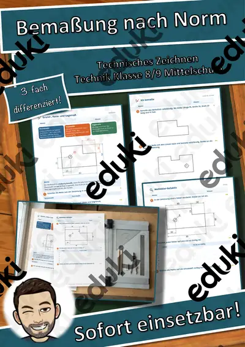

Licht und Schatten – Körper plastisch zeichnen – Lesespurgeschichte mit Rätselaufgaben (Klasse 8)
Licht und Schatten – Körper plastisch zeichnen – Lesespurgeschichte Kunst (Klasse 8)Begib dich mit deiner Klasse auf eine spannende Lesespur durch die Kunst-AG-Nacht! Emilia und Taylan erkunden ihre abendlich erleuchtete Schule: Im Kugelraum lernen sie Glanzlicht, Eigenschatten, Reflexlicht und Schlagschatten kennen, am Lampentisch, wie der Schatten die Lichtrichtung verrät, an der Grauwerttreppe, wie Tonwerte entstehen. An der Schraffurwand und am Wischtisch üben sie Techniken für plastische Zeichnungen, im Kerzenzimmer entdecken sie Nachtbilder mit starken Kontrasten, im Filmstudio, wie Licht Stimmung erzeugt, und im Stilllebenraum wenden sie alles an. Auf der Dachterrasse werden die Zeichnungen der Nacht gezeigt. Ihre Glühbirne Birni ist immer dabei. Am Ende jedes Abschnitts verrät ein Hinweis den nächsten Raum auf dem Schulplan – nur wer richtig liest und mitdenkt, findet den Weg und sammelt alle geheimen Buchstaben zum Lösungswort.
Die perfekte Lesespur für den KUNSTUNTERRICHT der 8. Klasse: Sie verbindet motivierendes, sinnentnehmendes Lesen mit dem nötigen Fachwissen, um Körper räumlich und plastisch zu zeichnen – und schult zugleich das genaue Arbeiten. Das Material ist SOFORT EINSETZBAR und in DREI DIFFERENZIERUNGSSTUFEN (leicht ★ / mittel ★★ / schwer ★★★) angelegt.WICHTIG: Das komplette Material ist sowohl in FARBE als auch in SCHWARZ-WEISS enthalten – ideal zum Sparen von Druckkosten.DAS IST ENTHALTEN
- Lesespurgeschichte in 3 Niveaus (leicht, mittel, schwer)
- farbiger Schulplan als Suchkarte
- Hörverstehen mit QR-Code zur MP3 (selbstständiges Hören mit Kopfhörern)
- vier Aufträge auf dem Weg: ein Zuordnungs-Rätsel, ein Quiz, eine Rechenaufgabe und ein Steckbrief
- Rätselseite (Wörter-Suchsel + Wissensfragen)
- Ausmalbild zum Thema (Stillleben – ideal zum Schattieren)
- ausführliches Lösungsblatt für die Lehrkraft
- alles zusätzlich als komplette Schwarz-Weiß-VarianteSO FUNKTIONIERT DIE LESESPURDie Jugendlichen lesen ab START, entnehmen dem Text einen Hinweis auf einen Raum der Schule, suchen ihn auf dem Plan und lesen bei dieser Station weiter. An jeder richtigen Station gibt es einen Sammelbuchstaben. Eingebaute Sackgassen (Hausmeisterraum, Turnhalle, Sekretariat, Pausenhalle) gehören zwar zur Schule, sind aber keine Stationen und dienen der Selbstkontrolle. Am Ende werden die gesammelten Buchstaben umgestellt und ergeben ein geheimes Lösungswort. (Die Lösungen sind selbstverständlich nur im Lösungsblatt für die Lehrkraft enthalten.)INHALTLICHER SCHWERPUNKTDie Jugendlichen unterscheiden Glanzlicht, Licht, Eigenschatten, Reflexlicht und Schlagschatten und erkennen die Lichtrichtung an der Lage der Schatten. Sie zeichnen Tonwerte von Weiß bis Schwarz, wenden Schraffur, Kreuzschraffur und Wischtechnik an und erfahren, wie Malerei und Film starke Kontraste zwischen hell und dunkel einsetzen, um Stimmung und Spannung zu erzeugen. Zum Schluss übertragen sie das Gelernte auf ein Stillleben.ABGEDECKTER LEHRPLAN (Klasse 8, Kunst)
- Kunst (LehrplanPLUS Bayern) – Klasse 8 „Räumliche Darstellung“: Licht, Eigenschatten, Schlagschatten und Reflexlicht unterscheiden, die Lichtrichtung erkennen, Tonwerte und Schraffuren zeichnerisch anwenden und starke Kontraste als Stilmittel in Malerei und Film beschreiben.
- Deutsch – Lesen mit Texten und Medien umgehen: Lesestrategien anwenden, Texten gezielt Informationen entnehmen, sinnentnehmend und selektiv lesen; Zuhören: einem Sachhörtext konzentriert folgen (Hörverstehen mit MP3).
- Mathematik – Rechnen im Sachzusammenhang.
- Fächerübergreifend / Kompetenzen: Physik (Licht und Schatten), Medienbildung (Filmbeleuchtung), genaues Beobachten, kreatives Gestalten (Ausmalbild).
Geeignet für Freiarbeit, Stationenlernen, Vertretungsstunden, Wochenplan, Projekttage und Homeschooling. Klassenstufe 8 (differenziert einsetzbar auch in Klasse 7 und 9).
Ähnliche Materialien

Das Porträt – Gesichter zeichnen und verstehen – Lesespurgeschichte mit Rätselaufgaben (Klasse 7)

Barock Lückentext mit Wortspeicher Hörverstehen und Suchsel

Licht – Hörverstehen mit Lückentext (interaktiv)

Licht Lückentext mit Wortspeicher Hörverstehen und Suchsel

Winterblues – warum uns im Winter das Licht fehlt – Lesespurgeschichte mit Rätselaufgaben (Klasse 8)

Das Licht und die Farben – Lesespurgeschichte mit Rätselaufgaben (Klasse 7)

Bemaßung nach Norm – Technisches Zeichnen Klasse 8/9 Mittelschule – Arbeitsheft mit Lösungen